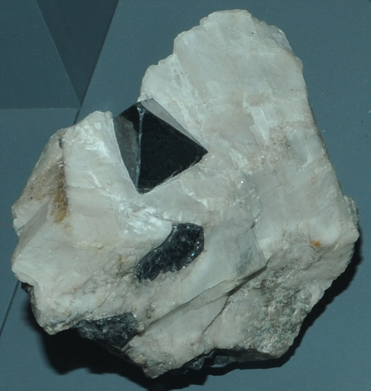

|

| (Zn,Mn,Fe)(Fe,Mn)2O4
This sample of franklinite is displayed in the Smithsonian Museum of Natural History. Franklinite is a oxide mineral of zinc, manganese and iron with the composition (Zn,Mn,Fe)(Fe,Mn)2O4. The sample at left is franklinite with calcite. It is about 8 cm across and is from Franklin, New Jersey. The mineral and the town are named after Benjamin Franklin.
|